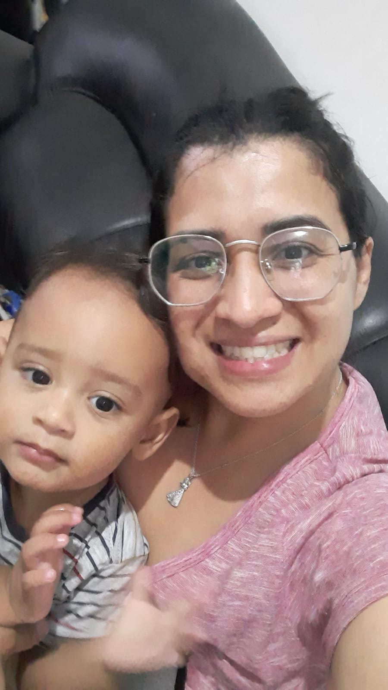

Eu sei que, muitas vezes, as palavras não são suficientes para expressar o que sinto,
mas mesmo assim preciso pedir desculpas.
Sinto muito por ser assim, por não ter agido como você esperava ou merecia.
Sei que às vezes posso ser difícil, impreciso ou até mesmo ausente quando você mais precisa.
Não é fácil para mim admitir isso, mas sei que é necessário.
Reconheço que minhas atitudes podem machucar, mesmo sem a intenção, e isso me dói profundamente.
Eu não queria te magoar, não queria que você se sentisse desvalorizada ou ignorada.
Prometo que estou tentando melhorar, a cada dia, a cada erro.
Quero ser alguém melhor para você, alguém que te faça sentir cuidada e respeitada.
Sei que palavras podem soar vazias, então estou disposto a mostrar isso nas minhas ações.
Desculpe por ser assim, por não estar sempre à altura do que você merece.
Espero que, com o tempo, eu possa te mostrar o quanto me importo.
Amo você e o Noah.
Me perdoa!
At. Juan
